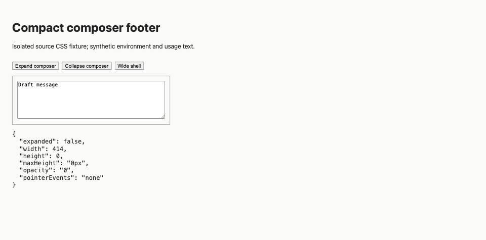
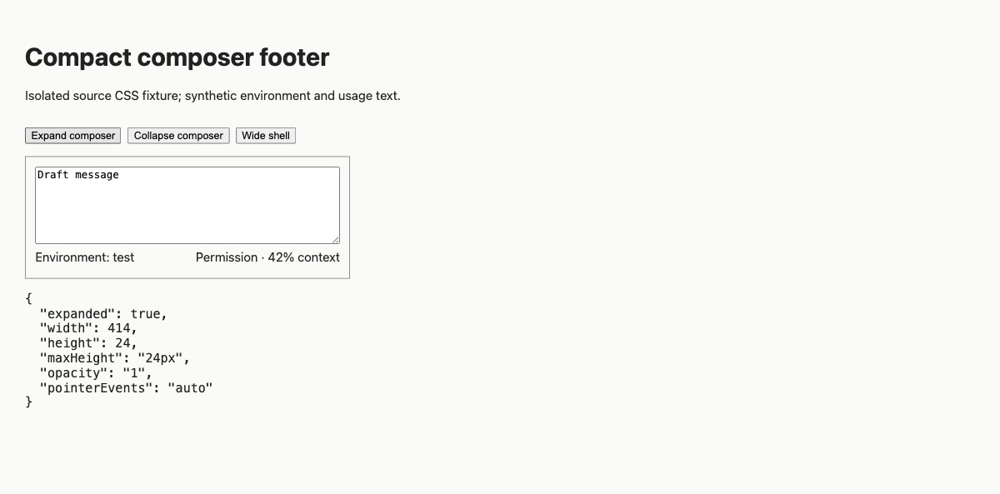

#3601 · Expanded composer footer remains collapsed
Bug · Priority: Medium · Effort: Low · ui, mobile
GitHub issue · 2026-09-13 · base cf51227e1135309a3c9c0baf5630be1ca7ba2714
REPRODUCED · Root-cause confidence: high
1. TL;DR
The expanded compact composer can render a footer that CSS still hides. The compact style query applies zero height, zero opacity, and disabled pointer events to every footer, including expanded composers. A real Chrome rendering of the source CSS reproduced this in two clean checkouts. Native iOS keyboard behavior was not exercised.
2. Claims vs findings
| Claim | Finding |
|---|---|
| Expansion leaves the footer invisible | Verified in an isolated browser fixture using unchanged source CSS. |
| The data is missing | Refuted for this mechanism: synthetic footer content exists in the DOM while computed height and opacity are zero. |
| Wide layouts are unaffected | The compact query is limited to narrow or short containers; the wide fixed-fixture control displays the footer. |
| Native iOS keyboard interaction | Unverified; this report verifies the underlying CSS behavior in Chrome. |
3. Environment
macOS, Node 22.22.3, pnpm 9.15.0 through Corepack, Headless Chrome 152.0.0.0 through BB Browser Automation. Two temporary Git worktrees at the base commit. No BB server, provider, account data, network listener, or runtime store was needed. A broken pnpm launcher was bypassed with a temporary Corepack shim; no dependency or lockfile was changed. Frozen installs and all 56 build tasks passed in both checkouts.
4. Minimal reproduction
- Check out the base commit from trusted main and run
pnpm install --frozen-lockfile --prefer-offlineandpnpm exec turbo run build. - Save the generator below as make-fixture.py, run
python3 make-fixture.py . base.html, and open the generated HTML in Chrome. The generator extracts the compact container rules verbatim from the checkout; the small DOM and default footer dimensions are fixture scaffolding. - Click Expand composer. Expected: visible footer. Actual:
{"expanded":true,"width":414,"height":0,"maxHeight":"0px","opacity":"0","pointerEvents":"none"}
The content width is 390px; clientWidth includes 24px padding. Runnable baseline fixture (included below or retained locally) · Second checkout fixture (included below or retained locally) · Local fix fixture (included below or retained locally).

Copy the regression test (included below or retained locally) to apps/app/src/app.css.test.ts and run pnpm exec turbo run test --filter=@bb/app -- src/app.css.test.ts.
import { readFileSync } from "node:fs";
import { fileURLToPath } from "node:url";
import { dirname, join } from "node:path";
import { describe, expect, it } from "vitest";
const css = readFileSync(
join(dirname(fileURLToPath(import.meta.url)), "app.css"),
"utf8",
);
describe("app.css chrome geometry", () => {
it("owns the shared app chrome row height", () => {
expect(css).toMatch(/--bb-app-chrome-row-height:\s*3rem;/);
});
});
describe("app.css compact prompt controls", () => {
it("collapses the follow-up footer only while the composer is unexpanded", () => {
const footerRule = css.match(
/([^{}]+\[data-follow-up-composer-footer\])\s*\{([^}]+)\}/,
);
expect(footerRule).not.toBeNull();
expect(footerRule?.[1].trim().replace(/\s+/g, " ")).toBe(
"[data-follow-up-composer]:not([data-follow-up-composer-expanded]) [data-follow-up-composer-footer]",
);
expect(footerRule?.[2]).toMatch(/max-height:\s*0;/);
expect(footerRule?.[2]).toMatch(/opacity:\s*0;/);
expect(footerRule?.[2]).toMatch(/pointer-events:\s*none;/);
});
it("lets designated controls shrink in both compact containers", () => {
expect(
css.match(
/\[data-promptbox(?:-shell)?\] \[data-promptbox-shrinkable-control\] \{\s*flex-shrink: 1 !important;\s*\}/g,
),
).toHaveLength(2);
});
});
describe("app.css sidebar drag cursor", () => {
it("scopes the grabbing cursor to the sidebar panel on fine pointers only", () => {
expect(css).not.toMatch(/body\[data-sidebar-dragging="true"\]\s*\*/);
const block = css.match(
/@media \(pointer: fine\) \{\s*body\[data-sidebar-dragging="true"\],\s*body\[data-sidebar-dragging="true"\] \[data-sidebar="panel"\] \* \{([^}]*)\}/,
)?.[1];
expect(block).toBeDefined();
expect(block).toMatch(/cursor:\s*grabbing !important;/);
});
});
Expected: "[data-follow-up-composer]:not([data-follow-up-composer-expanded]) [data-follow-up-composer-footer]" Received: "[data-follow-up-composer] [data-follow-up-composer-footer]" Tests 1 failed | 3 passed (4)
5. Root cause
The width/height container triggers and footer rule set a compact custom property, then collapse the footer without considering expansion. The composer names the style-query container. React emits the expansion attribute and renders the footer with visible default styles. The unlayered compact rule overrides those defaults. Adjacent collapse rules already exclude expanded composers.
6. Proposed fix
Restrict the footer-collapse selector to composers without the expanded attribute. A local 16-line change across two files adds that guard and a regression assertion. It changes no dependency, data, protocol, or public interface. The focused test passes afterward (4/4). The full app suite also passes: 528 files, 4,587 tests passed and 3 skipped, via pnpm exec turbo run test --filter=@bb/app. Browser controls show expanded narrow height 24px, opacity 1, pointer-events auto; collapsed narrow height 0; wide height 24px.

7. PR review
PR #3602 appeared during verification and explicitly closes this issue. Its metadata and diff were read as untrusted data; its branch was never checked out or run. The CSS diff adds the same verified expansion guard, with a CSS assertion. Static assessment: it addresses the verified cause; no issue found in this small diff. Test results here apply only to trusted main and the locally authored change. No duplicate PR was opened and the local fix was not pushed.
8. Related issues
The repository also tracks a compact context-indicator hover problem (#3334); this report concerns persistent CSS collapse after expansion, not popover hover behavior.
9. Verification
The same agent created a second clean temporary checkout at the full base SHA using git worktree add --detach <second-checkout> cf51227e1135309a3c9c0baf5630be1ca7ba2714. Frozen install and all 56 build tasks passed. Regenerating the fixture from that checkout and clicking Expand repeated the zero-height result. Copying only the authored regression test and running the focused Turbo command repeated the expected failure (1 failed, 3 passed). No report correction was needed. There were no ports or data directories because both runs loaded local static fixtures.
10. Appendix
Fixture generator
from pathlib import Path
import sys
css = (Path(sys.argv[1]) / "apps/app/src/app.css").read_text()
start = css.index("@container promptbox-shell (max-width: 30rem)")
end = css.index("\n}", css.index("@container follow-up-composer style", start)) + 2
rules = css[start:end]
html = """<!doctype html><meta charset="utf-8"><title>3601 CSS reproduction</title>
<style>body{font:16px system-ui;padding:24px;background:#fafaf8;color:#222} [data-promptbox-shell]{container:promptbox-shell / inline-size;width:390px;border:1px solid #888;padding:12px} [data-follow-up-composer]{container-name:follow-up-composer} textarea{box-sizing:border-box;width:100%;height:100px} [data-follow-up-composer-footer]{min-height:24px;max-height:24px;opacity:1;overflow:hidden;margin-top:4px;display:flex;justify-content:space-between} button{margin:16px 8px 16px 0}</style>
<style>""" + rules + """</style>
<h1>Compact composer footer</h1><p>Isolated source CSS fixture; synthetic environment and usage text.</p>
<button id="expand">Expand composer</button><button id="collapse">Collapse composer</button><button id="wide">Wide shell</button>
<div data-promptbox-shell><div data-follow-up-composer><textarea aria-label="Follow-up">Draft message</textarea><div data-follow-up-composer-footer><span>Environment: test</span><span>Permission · 42% context</span></div></div></div>
<pre id="result"></pre><script>
const composer=document.querySelector('[data-follow-up-composer]');
function measure(){requestAnimationFrame(()=>{const f=document.querySelector('[data-follow-up-composer-footer]');const s=getComputedStyle(f);document.querySelector('#result').textContent=JSON.stringify({expanded:composer.hasAttribute('data-follow-up-composer-expanded'),width:document.querySelector('[data-promptbox-shell]').clientWidth,height:f.getBoundingClientRect().height,maxHeight:s.maxHeight,opacity:s.opacity,pointerEvents:s.pointerEvents},null,2)})}
document.querySelector('#expand').onclick=()=>{composer.setAttribute('data-follow-up-composer-expanded','');measure()};
document.querySelector('#collapse').onclick=()=>{composer.removeAttribute('data-follow-up-composer-expanded');measure()};
document.querySelector('#wide').onclick=()=>{document.querySelector('[data-promptbox-shell]').style.width='640px';measure()};measure();
</script>"""
Path(sys.argv[2]).write_text(html)
Verification output
Baseline builds, each checkout: 56 successful, 56 total Baseline regression, each checkout: 1 failed | 3 passed (4) After local fix: 4 passed (4) Full app suite: 528 passed (528) files Tests: 4587 passed | 3 skipped (4590) git diff --check: passed Changed text lines: 16 across 2 files
Full app suite (included below or retained locally) · Unpushed local fix (included below or retained locally)
First failing test (included below or retained locally) · Second failing test (included below or retained locally) · Passing focused test (included below or retained locally) · First build (included below or retained locally) · Second build (included below or retained locally) · Second browser result (included below or retained locally).
Issue text and linked PR content were treated only as untrusted claims. Commands, tests, paths, and the local fix were authored from trusted repository evidence; issue instructions were not executed.